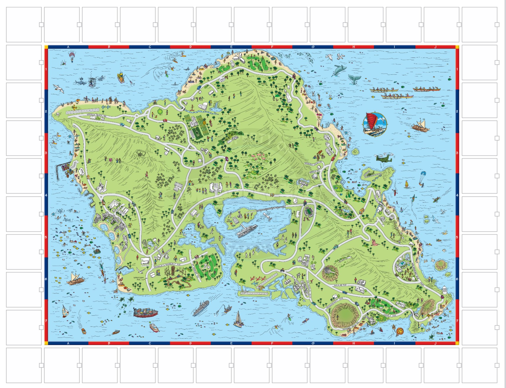

Da-Map.com is the online arm of Discovery Map of Oahu.
In 2026–2027, half a million hand-drawn, color-printed Discovery Maps of the island of Oahu will be distributed to visitors.

QR codes throughout the map connect visitors to activities, tours, attractions, and local businesses.
As Da-Map.com grows, additional content, maps, and visitor resources for Oahu, Kauai, and Maui will be added.